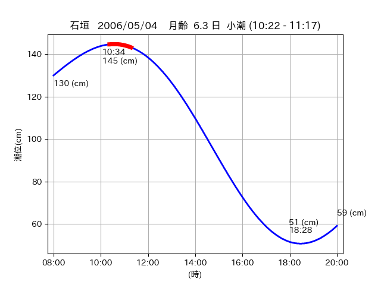
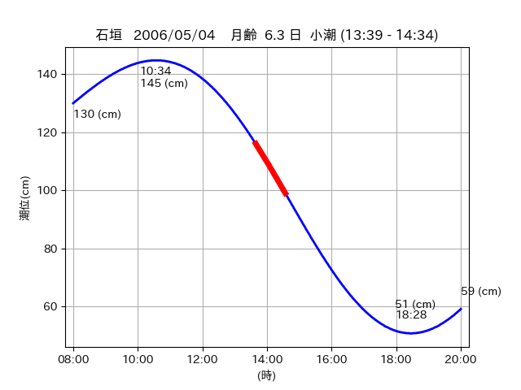

<!DOCTYPE html>
<html>
<head>
    
    <meta http-equiv="content-type" content="text/html; charset=UTF-8" />
    
        <script>
            L_NO_TOUCH = false;
            L_DISABLE_3D = false;
        </script>
    
    <style>html, body {width: 100%;height: 100%;margin: 0;padding: 0;}</style>
    <style>#map {position:absolute;top:0;bottom:0;right:0;left:0;}</style>
    <script src="https://cdn.jsdelivr.net/npm/leaflet@1.9.3/dist/leaflet.js"></script>
    <script src="https://code.jquery.com/jquery-3.7.1.min.js"></script>
    <script src="https://cdn.jsdelivr.net/npm/bootstrap@5.2.2/dist/js/bootstrap.bundle.min.js"></script>
    <script src="https://cdnjs.cloudflare.com/ajax/libs/Leaflet.awesome-markers/2.0.2/leaflet.awesome-markers.js"></script>
    <link rel="stylesheet" href="https://cdn.jsdelivr.net/npm/leaflet@1.9.3/dist/leaflet.css"/>
    <link rel="stylesheet" href="https://cdn.jsdelivr.net/npm/bootstrap@5.2.2/dist/css/bootstrap.min.css"/>
    <link rel="stylesheet" href="https://netdna.bootstrapcdn.com/bootstrap/3.0.0/css/bootstrap-glyphicons.css"/>
    <link rel="stylesheet" href="https://cdn.jsdelivr.net/npm/@fortawesome/fontawesome-free@6.2.0/css/all.min.css"/>
    <link rel="stylesheet" href="https://cdnjs.cloudflare.com/ajax/libs/Leaflet.awesome-markers/2.0.2/leaflet.awesome-markers.css"/>
    <link rel="stylesheet" href="https://cdn.jsdelivr.net/gh/python-visualization/folium/folium/templates/leaflet.awesome.rotate.min.css"/>
    
            <meta name="viewport" content="width=device-width,
                initial-scale=1.0, maximum-scale=1.0, user-scalable=no" />
            <style>
                #map_9fc77963c4bbc5a235d7f3a37617a57a {
                    position: relative;
                    width: 2048.0px;
                    height: 1600.0px;
                    left: 0.0%;
                    top: 0.0%;
                }
                .leaflet-container { font-size: 1rem; }
            </style>
        
</head>
<body>
    
    
            <div class="folium-map" id="map_9fc77963c4bbc5a235d7f3a37617a57a" ></div>
        
</body>
<script>
    
    
            var map_9fc77963c4bbc5a235d7f3a37617a57a = L.map(
                "map_9fc77963c4bbc5a235d7f3a37617a57a",
                {
                    center: [24.479, 124.187],
                    crs: L.CRS.EPSG3857,
                    ...{
  "zoom": 12,
  "zoomControl": true,
  "preferCanvas": false,
}

                }
            );

            

        
    
            var tile_layer_f5090cb0023aa06ac3eff32646293f22 = L.tileLayer(
                "https://cyberjapandata.gsi.go.jp/xyz/seamlessphoto/{z}/{x}/{y}.jpg",
                {
  "minZoom": 0,
  "maxZoom": 18,
  "maxNativeZoom": 18,
  "noWrap": false,
  "attribution": "\u5730\u7406\u9662\u5730\u56f3",
  "subdomains": "abc",
  "detectRetina": false,
  "tms": false,
  "opacity": 1,
}

            );
        
    
            tile_layer_f5090cb0023aa06ac3eff32646293f22.addTo(map_9fc77963c4bbc5a235d7f3a37617a57a);
        
    
            var marker_2bdca9c1cffe33b67826a6395ee2defb = L.marker(
                [24.5153, 124.3062],
                {
}
            ).addTo(map_9fc77963c4bbc5a235d7f3a37617a57a);
        
    
            var icon_cb1d9a10624da5c9621106eb63382971 = L.AwesomeMarkers.icon(
                {
  "markerColor": "orange",
  "iconColor": "white",
  "icon": "info-sign",
  "prefix": "glyphicon",
  "extraClasses": "fa-rotate-0",
}
            );
        
    
        var popup_065a95024d53b0b4f22df40604b38561 = L.popup({
  "maxWidth": "100%",
});

        
            
                var html_64bb26b65165f97e02b05e2999156546 = $(`<div id="html_64bb26b65165f97e02b05e2999156546" style="width: 100.0%; height: 100.0%;"><table><tr><td></td></tr><tr><td><center>20060504 No.1 </center></table></td></tr></table</div>`)[0];
                popup_065a95024d53b0b4f22df40604b38561.setContent(html_64bb26b65165f97e02b05e2999156546);
            
        

        marker_2bdca9c1cffe33b67826a6395ee2defb.bindPopup(popup_065a95024d53b0b4f22df40604b38561)
        ;

        
    
    
                marker_2bdca9c1cffe33b67826a6395ee2defb.setIcon(icon_cb1d9a10624da5c9621106eb63382971);
            
    
            var poly_line_4b26c7e69e74f7f83134b5a1b606e956 = L.polyline(
                [[24.5153, 124.3062], [24.5177, 124.3087]],
                {"bubblingMouseEvents": true, "color": "#FF00FF", "dashArray": null, "dashOffset": null, "fill": false, "fillColor": "#FF00FF", "fillOpacity": 0.2, "fillRule": "evenodd", "lineCap": "round", "lineJoin": "round", "noClip": false, "opacity": 1.0, "smoothFactor": 1.0, "stroke": true, "weight": 3}
            ).addTo(map_9fc77963c4bbc5a235d7f3a37617a57a);
        
    
            var marker_fdf45d5f9f37e8778624815fba582b59 = L.marker(
                [24.5321, 124.314],
                {
}
            ).addTo(map_9fc77963c4bbc5a235d7f3a37617a57a);
        
    
            var icon_11e192720c62f74d1fe12b74d76c7ac3 = L.AwesomeMarkers.icon(
                {
  "markerColor": "blue",
  "iconColor": "white",
  "icon": "info-sign",
  "prefix": "glyphicon",
  "extraClasses": "fa-rotate-0",
}
            );
        
    
        var popup_969f1a37fffc29d8bf2552685edb5af3 = L.popup({
  "maxWidth": "100%",
});

        
            
                var html_cc7aa3421b363ee559a198b397f9884c = $(`<div id="html_cc7aa3421b363ee559a198b397f9884c" style="width: 100.0%; height: 100.0%;"><table><tr><td></td></tr><tr><td><center>20060504 No.2 </center></table></td></tr></table</div>`)[0];
                popup_969f1a37fffc29d8bf2552685edb5af3.setContent(html_cc7aa3421b363ee559a198b397f9884c);
            
        

        marker_fdf45d5f9f37e8778624815fba582b59.bindPopup(popup_969f1a37fffc29d8bf2552685edb5af3)
        ;

        
    
    
                marker_fdf45d5f9f37e8778624815fba582b59.setIcon(icon_11e192720c62f74d1fe12b74d76c7ac3);
            
    
            var marker_98123049c3eddc6bccad83fac7a54793 = L.marker(
                [24.4785, 124.1874],
                {
}
            ).addTo(map_9fc77963c4bbc5a235d7f3a37617a57a);
        
    
            var icon_bbe3738cbec296e329bf15ffe9ccecac = L.AwesomeMarkers.icon(
                {
  "markerColor": "blue",
  "iconColor": "white",
  "icon": "info-sign",
  "prefix": "glyphicon",
  "extraClasses": "fa-rotate-0",
}
            );
        
    
        var popup_83e4509b86cf824bb91c316983d08c1b = L.popup({
  "maxWidth": "100%",
});

        
            
                var html_60b597307403d2490d2fa253b01d01c5 = $(`<div id="html_60b597307403d2490d2fa253b01d01c5" style="width: 100.0%; height: 100.0%;"><table><tr><td></td></tr><tr><td><center>20060504 No.3 </center></table></td></tr></table</div>`)[0];
                popup_83e4509b86cf824bb91c316983d08c1b.setContent(html_60b597307403d2490d2fa253b01d01c5);
            
        

        marker_98123049c3eddc6bccad83fac7a54793.bindPopup(popup_83e4509b86cf824bb91c316983d08c1b)
        ;

        
    
    
                marker_98123049c3eddc6bccad83fac7a54793.setIcon(icon_bbe3738cbec296e329bf15ffe9ccecac);
            
</script>
</html>